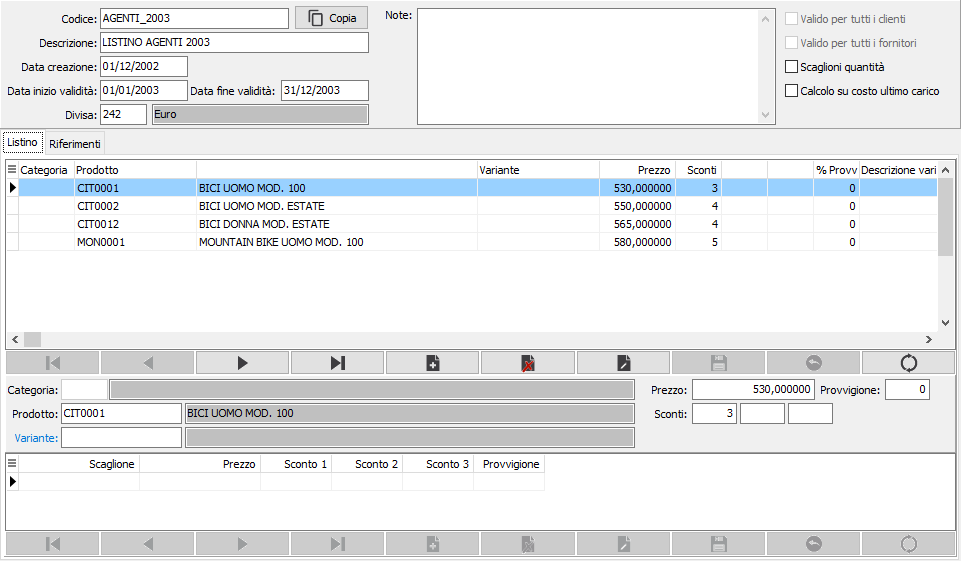
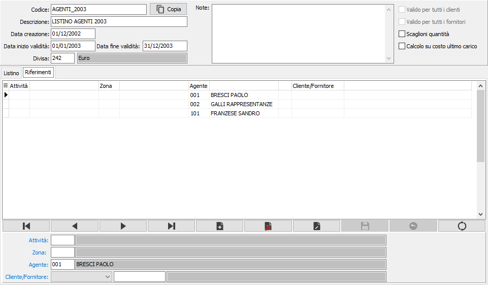
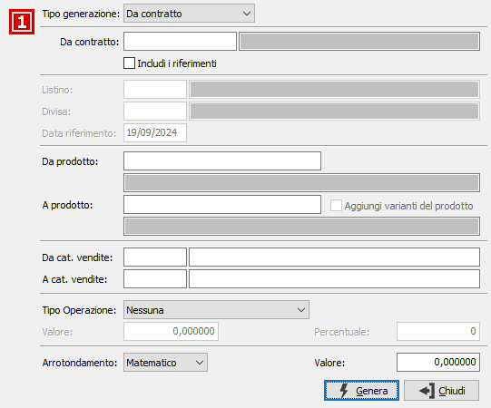

Manutenzione contratti
I contratti consentono di associare prezzi, sconti e provvigioni, con condizioni particolari legate a categorie di vendita ed eventuali scaglioni di quantità. Ogni contratto può essere associato sia a singoli clienti o agenti che a zone o codici attività.
La manutenzione si divide in due sezioni (linguette), la prima che contiene i dati del contratto detta Listino, la seconda che contiene i dati relativi all'applicazione del contratto stesso detta Riferimenti.
Accanto al codice è presente un pulsante che consente di generare nuovi contratti in modo automatico.
Listino
La sezione principale consente la manutenzione dei dati generali del contratto e dei dati specifici relativi a prezzi, sconti e provvigioni.

CODICE: indica il codice associato al contratto. Sul campo sono disponibili le funzioni di ricerca (F9).
DESCRIZIONE: indica la descrizione associata al contratto.
DATA CREAZIONE: indica la data in cui è stato effettuato il primo inserimento dei dati.
DATA INIZIO VALIDITÀ: definisce la data di inizio validità del contratto. Campo obbligatorio.
DATA FINE VALIDITÀ: definisce la data di fine validità del contratto. Campo obbligatorio.
DIVISA: indica il codice della divisa da associare al contratto. Sul campo sono attive le funzioni di ricerca (F9).
NOTE: eventuali note aggiuntive.
VALIDO PER TUTTI I CLIENTI: Definisce se il contratto è generico, cioè non ha specifici riferimenti, ma è valido per tutti i clienti (casella con segno di spunta); il campo è abilitato se non è presente nessun riferimento per attività, zona, agente o cliente. Se spuntato, nei riferimenti, non sarà possibile includere clienti.
VALIDO PER TUTTI I FORNITORI: Definisce se il contratto è generico, cioè non ha specifici riferimenti, ma è valido per tutti i fornitori (casella con segno di spunta); il campo è abilitato se non è presente nessun riferimento per attività, zona, agente o fornitore. Se spuntato, nei riferimenti, non sarà possibile includere fornitori.
Se entrambe le caselle hanno la spunta la pagina dei Riferimenti non sarà visibile.
SCAGLIONI QUANTITÀ: definisce se gestire gli scaglioni di quantità (casella con segno di spunta) oppure i singoli prezzi per prodotto.
CALCOLO SU COSTO ULTIMO CARICO: disabilita l'inserimento del prezzo e consente di utilizzare come prezzo di vendita il costo ultimo carico ed applicarvi sconti o maggiorazioni (casella con segno di spunta).
CATEGORIA: codice della categoria di vendita a cui associare i dati del listino. L'utilizzo della categoria è alternativo a quello del prodotto, in quanto una categoria può comprendere più prodotti. Sul campo sono attive le funzioni di ricerca (F9).
PRODOTTO: codice del prodotto a cui associare i dati del listino. L'utilizzo del prodotto è alternativo a quello della categoria. Sul campo sono attive le funzioni di ricerca (F9).
PREZZO: definisce il prezzo da assegnare al prodotto oppure alla categoria selezionata. Nel caso di gestione degli scaglioni di quantità il campo è disabilitato.
SCONTI: vengono indicati gli sconti da associare al prodotto oppure alla categoria. Nel caso di gestione degli scaglioni di quantità il campo è disabilitato. Il numero degli sconti richiesti è dipendente da come sono stati configurati gli sconti di rigo in configurazione base.
PROVVIGIONE: indica la percentuale di provvigione, se attive le provvigioni di rigo, da applicare. Nel caso di gestione degli scaglioni di quantità il campo è disabilitato.
SCAGLIONE: definisce la quantità massima raggiungibile per lo scaglione; se superiore sarà considerato lo scaglione successivo.
PREZZO: definisce il prezzo da assegnare al prodotto oppure alla categoria selezionata.
SCONTI: vengono indicati gli sconti da associare al prodotto oppure alla categoria. Il numero degli sconti richiesti è dipendente da come sono stati configurati gli sconti di rigo in configurazione base.
PROVVIGIONE: indica la percentuale di provvigione, se attive le provvigioni di rigo, da applicare.
Se attiva la gestione dei prezzi per variante in configurazione, è presente il campo Variante che è attivo solo se la data di inizio validità del contratto è successiva alla data di inizio utilizzo dei prezzi per variante presente in configurazione. Se presente la Variante il campo provvigione non è attivo e se valorizzato viene azzerato al salvataggio.
Riferimenti
La sezione consente l'associazione del contratto a gruppi omogenei identificati da zone o attività oppure a singoli agenti o clienti. In questa sezione è consentito inserire un solo dato per volta: solo attività, solo zona, solo agente oppure solo codice cliente o fornitore.

ATTIVITÀ: codice dell'attività a cui si intende associare il contratto corrente. Sul campo sono attive le funzioni di ricerca (F9) ed accesso rapido (CTRL+W).
ZONA: codice della zona a cui si intende associare il contratto corrente. Sul campo sono attive le funzioni di ricerca (F9) ed accesso rapido (CTRL+W).
AGENTE: codice dell'agente a cui si intende associare il contratto corrente. Sul campo sono attive le funzioni di ricerca (F9) ed accesso rapido (CTRL+W).
CLIENTE/FORNITORE: codice del cliente normale o provvisorio, presente in anagrafica, a cui si intende associare il contratto corrente. Sul campo sono attive le funzioni di ricerca (F9) ed accesso rapido (CTRL+W).
La pressione del pulsante a lato richiama la seguente finestra:

TIPO GENERAZIONE: definisce il metodo di generazione dei nuovi dati nel listino. Valori possibili: prezzo di vendita, costo di mercato, costo ultimo carico, prezzo medio di carico, da listino prodotti, da contratto.
DA CONTRATTO: attivo solo per generazione da contratto; indica il codice del contratto da cui effettuare la generazione. Sul campo sono attive le funzioni di ricerca (F9).
INCLUDI I RIFERIMENTI: attivo solo per generazione da contratto; indica se aggiungere anche i riferimenti presenti sul contratto da cui effettuare la generazione (casella con segno di spunta).
LISTINO: attivo solo per generazione da listino prodotti; indica il codice del listino da cui si vuole effettuare la generazione. Sul campo sono attive le funzioni di ricerca (F9).
DIVISA: attivo solo per generazione da listino prodotti; indica il codice della divisa da cui si vuole effettuare la generazione, per il listino richiesto. Sul campo sono attive le funzioni di ricerca (F9).
DATA RIFERIMENTO: attivo solo per generazione da listino prodotti; definisce la data, tramite cui ricercare i prezzi all'interno dell'eventuale listino di base. Saranno elaborati solo i prodotti le cui date di validità comprendono, come periodo, la data di riferimento.
DA PRODOTTO: eventuale codice dell'articolo, presente in anagrafica Prodotti, da cui si desidera iniziare la selezione. Confermando a vuoto, la selezione inizia con il primo prodotto valido. Sul campo sono attive le funzioni di ricerca (F9).
A PRODOTTO: eventuale codice dell'articolo, presente in anagrafica Prodotti, con cui si desidera terminare la selezione. Confermando a vuoto, la selezione termina con l’ultimo valido. Sul campo sono attive le funzioni di ricerca (F9).
AGGIUNGI VARIANTI DEL PRODOTTO: la casella è visibile solo se attiva la gestione dei prezzi per variante in configurazione e abilitata solo se si seleziona la generazione da costo ultimo carico o prezzo medio di carico; in questi casi la ricerca del prezzo avviene esclusivamente per variante specifica, non viene utilizzato il prezzo del solo prodotto se non viene trovato nessun valore per la variante.
DA CATEGORIA DI VENDITA: eventuale codice della categoria di vendita, riferita ai prodotti, con cui iniziare la selezione. Sul campo sono attive le funzioni di ricerca (F9).
A CATEGORIA DI VENDITA: eventuale codice della categoria di vendita, riferita ai prodotti, con cui terminare la selezione. Sul campo sono attive le funzioni di ricerca (F9).
TIPO OPERAZIONE: definisce un'eventuale operazione da compiere sul prezzo del prodotto; valori possibili: nessuna, divisione per valore costante, moltiplicazione per valore costante, percentuale di incremento/decremento.
VALORE: indica il valore con cui effettuare l'operazione richiesta; è alternativo alla percentuale.
PERCENTUALE: indica la percentuale con cui effettuare l'operazione richiesta; è alternativa al valore.
ARROTONDAMENTO: definisce il metodo di arrotondamento per il calcolo del prezzo: matematico, per eccesso o per difetto.
VALORE ARROTONDAMENTO: definisce il valore da utilizzare per effettuare l'arrotondamento dei prezzi.